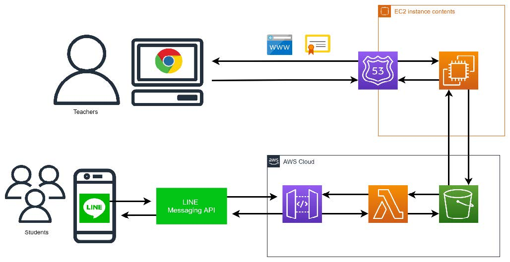

| Product
LINE Bot
| 項目 | 回答 |
|---|---|
| 目的 | 新型コロナウイルスにより、十分な教育を受けられない状況を改善するとともに教員の労働時間の短縮を目的とした。対象ユーザは高校生を想定。 |
| 結果 | 同時期にLINEのセキュリティ上に問題があったために、学校での運用は許可されなかった。 |
| 課題 | 画像や動画などの媒体がアップロードできないこと、教員側のUI/UXの工夫が必要であるということがあげられた。また、今回のようなシステム構成よりももっとコンパクトに作れると思うので、システム設計から考え直したいと思った。 |
このアプリはデジタルサイネージのようなものをイメージして自分専用に作成した。これは画面の大きさが変わってもきれいに表示されるようにした。それに加えて、APIを使って天気とニュースが表示されるようにした。いつでも最新の情報になる、かつ、リクエストによるサーバー負荷がかからないようになっている。ニュースは10分に一回、天気は１時間に１回の設定になっている。また、それぞれの画面がリアルタイムで動作するようにした。そのため、画面右下のバスは動いたり、時間によって次のバスが更新されたりするようになっている。
Sinage
このアプリはデジタルサイネージのようなものをイメージして自分専用に作成した。これは画面の大きさが変わってもきれいに表示されるようにした。それに加えて、APIを使って天気とニュースが表示されるようにした。いつでも最新の情報になる、かつ、リクエストによるサーバー負荷がかからないようになっている。ニュースは10分に一回、天気は１時間に１回の設定になっている。また、それぞれの画面がリアルタイムで動作するようにした。そのため、画面右下のバスは動いたり、時間によって次のバスが更新されたりするようになっている。